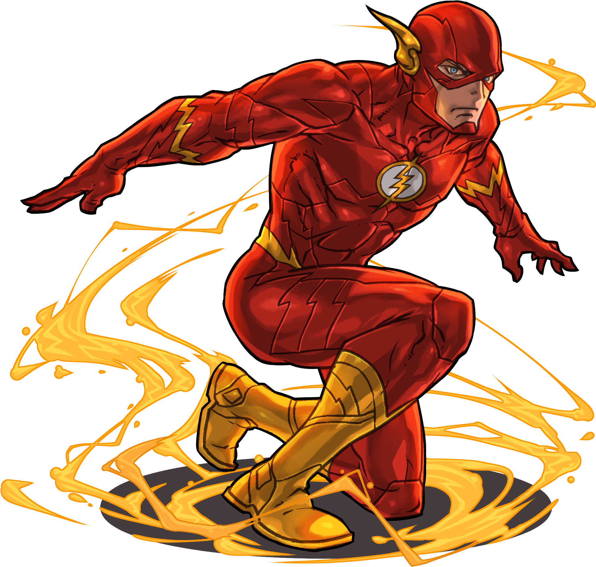
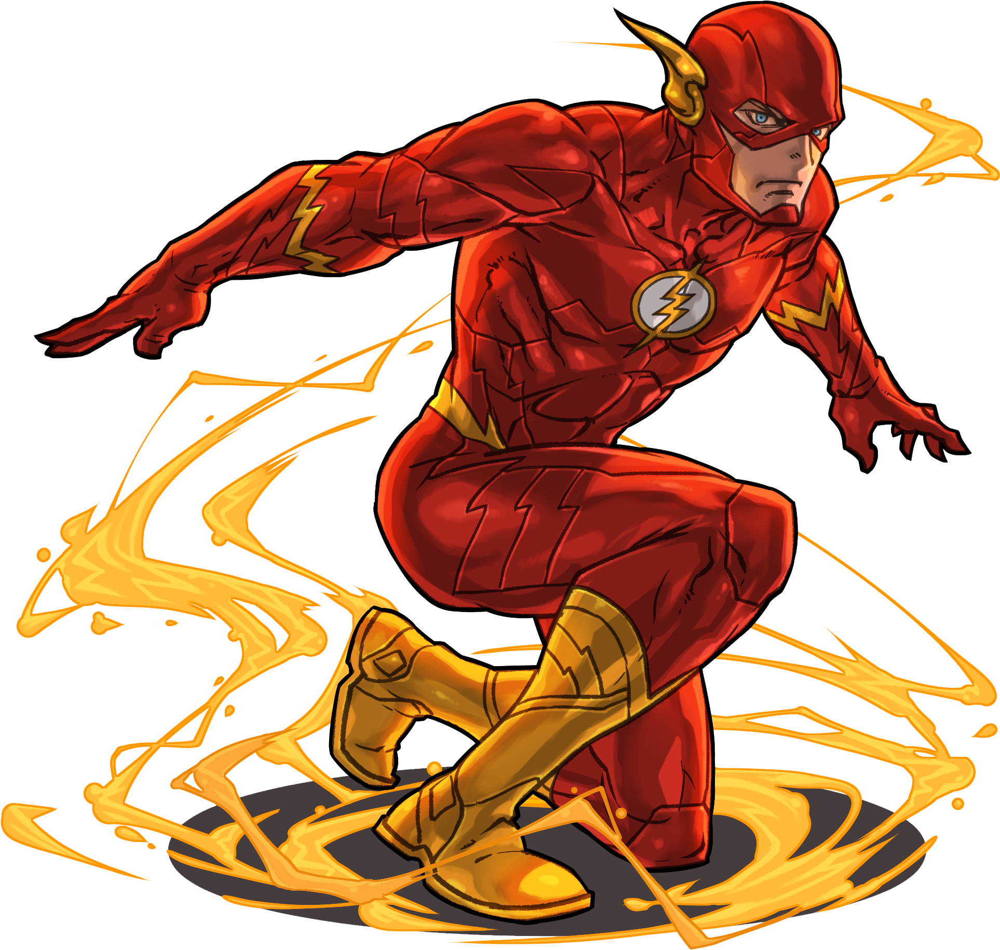

Una vida de Historias
Secciones
Cómic Húmoristico
Cómic Bélico

Cómic Rómantico o Sentimental
Cómic Constumbrista
Cómic de Aventuras
Cómic Fantástico
Editoriales
Marvel
- Spiderman
- Miedo Encarnado
- Iron Man
DC
- Batman
- Wonder Woman
- Superman
Image Cómics
- Spawn
- Tortugas ninjas
- The walking dead
Vértigo cómics
- V for Vendetta
- Sandman
- Constantine
- Lucifer
Dark house
- Hellboy
- The mask
- Predator
- Star wars
Bongo cómics
- Futurama
- Los Simpsons(Bartman)
Alumn. Kevin Salazar